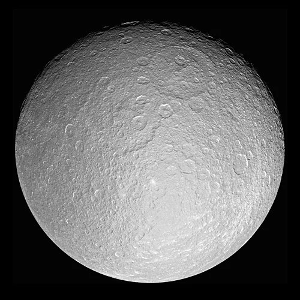

Reia - Lua de Saturno

Introdução e História
Reia é uma das maiores luas de Saturno e a segunda maior depois de Titã. Foi descoberta em 23 de dezembro de 1672 pelo astrônomo Giovanni Cassini durante observações do sistema saturniano.
Por muito tempo, Reia foi apenas um ponto de luz nos telescópios da Terra, até que as sondas Voyager e, posteriormente, a missão Cassini revelaram detalhes importantes sobre sua superfície e composição.
Características Físicas: Diâmetro, Massa e Órbita
Reia tem cerca de 1.528 km de diâmetro, o que a torna a segunda maior lua de Saturno depois de Titã.
Ela orbita Saturno a uma distância média de aproximadamente 527.000 km, com um período orbital de cerca de 4,5 dias terrestres, mantendo sempre o mesmo lado voltado para o planeta.
Sua densidade indica que é composta principalmente por gelo de água misturado com uma fração menor de material rochoso.
Geologia
A superfície de Reia é fortemente craterada, refletindo bilhões de anos de impactos, e é considerada uma das mais antigas e crateradas entre as luas de Saturno.
Regiões com traços lineares e vales profundos, resultantes de fraturas no gelo, indicam que o corpo pode ter passado por tensões tectônicas no passado remoto.
Diferenças de brilho entre hemisférios sugerem variações na composição do gelo e processos de superfície com diferentes histórias de impacto e exposição.
Missões Espaciais
Reia foi observada pela primeira vez de perto pelas sondas Voyager 1 e 2, que forneceram as primeiras imagens detalhadas de sua superfície e características principais.
A missão Cassini da NASA, que estudou o sistema de Saturno por mais de uma década, passou por Reia em vários sobrevoos, coletando imagens e dados que ajudaram a compreender sua composição, crateração e exosfera tênue.
Atmosfera e Exosfera
Reia possui uma exosfera extremamente fina composta por oxigênio e dióxido de carbono, detectada durante sobrevoos da Cassini.
Essa exosfera é tão rarefeita que não se assemelha a uma atmosfera real, mas sua presença indica processos químicos na superfície e interação com o ambiente magnético de Saturno.
Potencial de Habitabilidade
- 💧 Água Líquida: Não há evidências de água líquida atual; a maior parte da lua é gelo sólido.
- ⚡ Fonte de Energia: A energia interna de Reia é fraca devido à sua distância de Saturno e falta de aquecimento significativo por maré.
- 🧬 Ingredientes Químicos: A presença de gelo de água e compostos básicos oferece blocos químicos, mas sem condições favoráveis à vida como a conhecemos.
Reia não é considerada um ambiente habitável, mas seus estudos ajudam a entender melhor a diversidade de luas geladas no Sistema Solar e os processos que moldam superfícies antigas.
Curiosidades
Reia é uma das luas mais refletivas de Saturno devido à sua superfície predominantemente gelada.
Apesar de sua grande quantidade de crateras, algumas áreas mostram vales e fraturas lineares que podem ter sido causados por forças internas no passado.
Reia é tão fria que o gelo comporta-se como rocha sólida, preservando marcas de impactos por bilhões de anos.
Origem do Nome
Reia recebeu seu nome da mitologia grega. Na tradição mitológica, Reia era uma Titânide filha de Urano e Gaia, considerada a mãe dos principais deuses do Olimpo, incluindo Zeus (Júpiter na mitologia romana).
Ela era associada à fertilidade, à maternidade e ao ciclo da vida, simbolizando proteção e cuidado. O nome reflete a tradição de nomear luas com figuras femininas mitológicas ligadas a histórias antigas de criação e poder.
Referências
- NASA. Reia – Moon of Saturn. Disponível em: https://science.nasa.gov/saturn/moons/rhea/ . Acesso em: 26 dez. 2025.
- Britannica. Rhea (astronomy). Disponível em: https://www.britannica.com/topic/Rhea-astronomy . Acesso em: 26 dez. 2025.
- Wikipedia. Reia (satélite). Disponível em: https://pt.wikipedia.org/wiki/Reia_(satélite) . Acesso em: 26 dez. 2025.